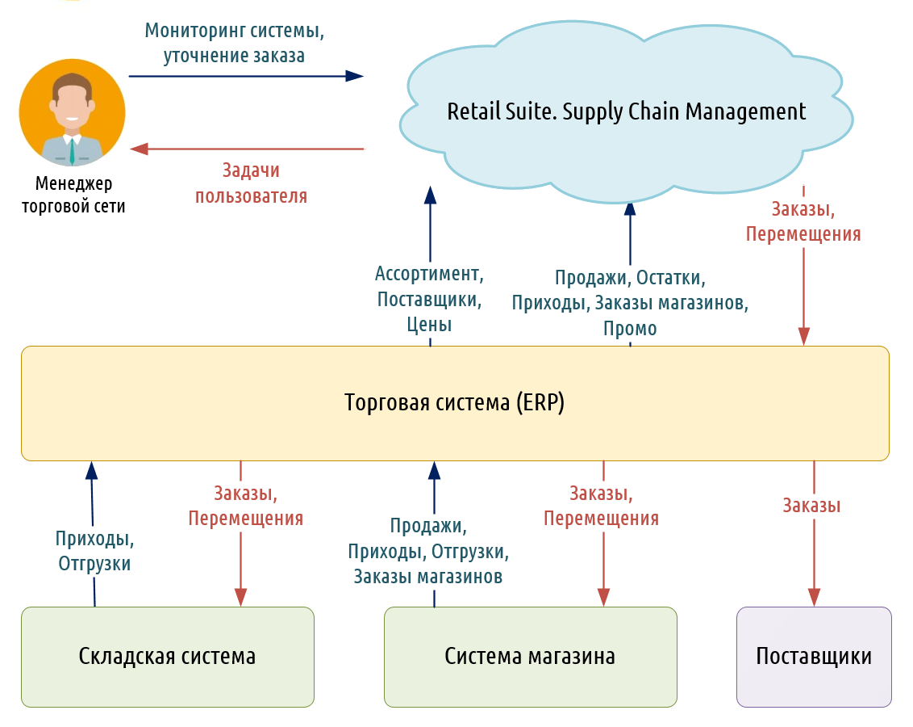

Как работает SCM?
Цели SCM заключаются в создании оптимальных планов использования технологических
линий, подробно расписывающих, что, когда и в какой последовательности надо
изготавливать с учетом ограничений мощностей, сырья и материалов, размеров партий и
необходимости переналадки оборудования на выпуск нового продукта. Это помогает
добиться высокого удовлетворения спроса при минимальных затратах.
Система SCM ориентирована на повышение эффективности и
снижение затрат. Эти потребности не изменились, изменилось
другое: заказчик является главным в определении приоритетов
системы SCM.
С помощью системы SCM можно уменьшить издержки
производства и увеличить прибыль производства.
Логистическая система SCM является технологией,
позволяющей оптимально распределить ресурсы, связанные с
управлением цепями поставок.
Концепция SCM позволяет решать задачи интегрированного управления функциональными областями логистики и
координации логистического процесса фирмы в логистике в зависимости от бизнес-платформы. Системы ERP с модулем SCM
позволяют увеличить скорость прохождения заказа в 6 раз и в 2 раза повысить удовлетворенность клиентов параметрами
логистического сервиса, создавая цепь поставок.
С помощью SCM решаются такие задачи, как планирования, координирования, производства, доставка товаров и услуг.
Цепь поставок выполняет две основные функции:
- Физическая функция цепочки поставки видна любому: материалы превращаются в детали, а те – в готовые изделия, и
все это тем или иным образом перемещается в пространстве.
- Посредническая функция цепочки поставки менее очевидна, но не менее важна – на рынок должно приходить то, что
нужно потребителям.
Looks like CSS3 supports multiple background images;